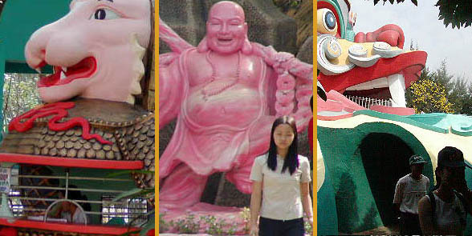

DuLichVanHoaSuoiTien/T.P.HoChiMinh
ソイテンパーク/ホーチミン
越南珍寺劇場もいよいよ終幕である。
ベトナム珍寺修行の最後はホーチミンから車で30分程北にあるソイテンパークというテーマパークである。
ところがただの遊園地ではない。
中国やベトナムの神話や仏教説話などを満載したこってり風味の仏教テーマパークである。
如何であろうこのインパクト。外から見ただけでここがただの遊園地ではない事がお判りいただけると思う。
水煙をあげながら回転するガマガエル、中華風というかベトナム風の門。中の人工山には大きな顔が刻まれていて通りがかりの人達の素通りを決して許さない勢いだ。
はっちゃけまくりのベトナムポップの大音量の中、地元のベトナム人が催眠術にかけられたようにどんどん門に吸い込まれていく。
休日という事もあって客足はかなりのものだが外国人の観光客は全く見かけなかった。ベトナム人のベトナム人によるベトナム人のための仏教テーマパークだ。
仏教テーマパークなれどサンタさんを門前にフューチャリングするキップの良さよ。さすが混合宗教大国ベトナム。
園内はかなり広く、遊園地とお寺と動物園と植物園とプールと人工池や人工渓流や人工山や人工レストランや人工トイレなどがあり相当気合いを入れないと遭難する恐れがあるので要注意。
中に入るといきなり10メートル以上はある灯籠の笠の部分が回転している。嗚呼、素晴らしき哉。
案内に従って先へ進む。
しばらく歩くと洞窟のある人工の山やこってこての装飾が施された門などが見えて来る。
山にはしっかり雲まで取り付けられてインチキ臭さ1000パーセント状態。
銭をくわえた極彩色の鳥がそびえる。その胸元には入口があってチケットを握りしめたチビッ子達が群がっている。
正体は水上ライドで洞窟状の水路を巡るもの。最初は恐竜とか原始人とかそれらしいものが並んでいるのだが、最後の方は観音様とか三国志とかになってきて、さすが仏教テーマパークである。
境内、いや、園内の所々にはかなりキテレツなキャラが潜んでいて一分たりとも油断ならない。
ここのメインキャラである硬貨をくわえたガマガエル、絶対乗りたくないボート、銭や銭や！銭万歳！の爺さん。
唖然としながらも園内を進んで行く。巨大な龍の口に入ると何やら中国風の裁判シーンが。はい、お判りですね。地獄巡りです。
先に進むと次から次へと地獄の責め苦ジオラマが展開される。
お化け屋敷よろしく人形が突然動き出すスプラッタホラー仕上げ。そんなに怖くはなかったけど客の恐がりかたの方が怖かったです。
グループで来ていた若い娘さんなんぞは気が狂わんばかりに叫んでいました。叫び過ぎだろ・・・
園内は奥に進む程大型アトラクションが増えて来る。とはいっても大型アトラクションは小型のジェットコースター位で日本の遊園地と比べたらあとは他愛もないアトラクションばかりだ。しかし日本の遊園地が逆立ちしても作れないような放送禁止ギリギリの危な目なキャラがウジャウジャといて脳髄がだんだんとろけて来そうになる。
蟻の恩返し、洞窟の恩返し、サボテンの恩返し、芋虫の恩返し、ウマの恩返し、鷲の恩返し。
いずれもベトナムでは誰もが知ってる有名な昔話である（大ウソ）。
何と言ったらいいんでしょう。常識のタガがはずれちゃっているというか。悪いクスリでも決めちゃったまんまアイデアをひねり出したのか。
テーマパークだろファンタジーだろ、
なら俺の頭の中のファンタジーをごっそり見せてやるから
よーく見とけええええ！
・・・みたいな完全前のめり妄想全開テーマパークである。
ある意味タイガーバームガーデンをはるかに越えたアジア屈指の仏教テーマパークである。
動物園コーナーは小動物が中心の展示。何故かアヒルが檻の中にいると思ったら、ニシキヘビの餌でした。
ニシキヘビを突きいたずらに食欲を刺激する係員。突かれながらも昼寝を決め込むニシキヘビ。何も知らず蛇の胴体の上に立つアヒル。その瞬間を今か今かと固唾を飲みながら待ち続ける大勢のギャラリー。そこにはタブーとか慈愛とか愛護といったコトバの欠片もなく、ただ剥き出しの好奇心だけが存在するドシュールな空間でした。
あまりのエグさにドラえモンも白目を剥いてました。
さて、そんな残虐シーンを見せておいてもそこは仏教テーマパーク。
きっちり大仏などを置いて、不殺生の罪を帳消しにしてくれる。
大仏の後ろの菩提樹も人工の木なのだが、根元に洞窟があってそこにも仏像がまつられている。
九頭の龍や訳の判らないおじさんの滝などもあって、何がなんだか訳が判らない。
園内に生息する大型動物の数々。ボート乗り場の亀、脱皮直後で色が白い龍、お腹がステージになっちゃったカエル。

園内の悲喜こもごも。
ふざけたブースの中で一日中金勘定をさせられているチケット売りのお姉ちゃん。ピンクの布袋様に励まされ人生について自虐的になりつつある娘さん。
地獄巡りから生還してもなお泣き叫び続けるギャル。君達、ここは楽しいかい？脳、傷ついてない？

水牛の上で笛を吹く小僧。法華寺でも見ました。ベトナムか中国の説話に出てくるんでしょう。
てなわけで、一通り園内を巡り頭が腐りかけて来ちゃったのでプールに入ろうと思い、プールのゲートを潜る。
しかし見えて来たプールはこんなの。ああ、ただのプールじゃない・・・普通に泳がせてくれない。
人工の山にどぎつい着色の魚珊瑚貝仏塔閻魔船海星龍蛸烏賊花木などなどなどなどが取り付いている。
私の知る限り地球最強のプールだと思う。周囲に見とれて思わず溺れそうになりました。
三方を奇妙なオブジェに囲まれながら泳いでいると正面の岩山の巨大な顔のこめかみの部分がチラチラと動く。
よーく見てみると人がいるではないか。と、言う事は登れるって事？
早速中に入ってみると、うおおっ！内部は人工洞窟風の吹き抜けでドドーンと上の方まで登れるようになっている。
これはニュースタイルの胎内巡りではないか！かっこいいぞ。
上までは階段で登るもよし、エレベータで登るのもよし、ちなみに水着でエレベーターに乗るのはチョット変な気分でした。
最上階はさすがに良い眺めで、悪夢のようなプールの向こうに悪夢のような様々なアトラクション、そしてその周りにはなーんにもないジャングルという物凄いシュールな眺望が得られる。
暑い中、プールで泳いだのに一向にスッキリした気分にならず、まるでオイルの中で泳いだようなネットリとした気分になっているのは何故？
で、最後にこの寺、じゃなくてテーマパークの本堂にお参りに行く。
入口の門にも似た奇妙な本堂の中央には何故か鬚のオッサンの生首が飾られている。一体誰なんだろう？
で、天井には様々な絵が描かれており、これがまたポンチで大変よろしい。
裸の赤ん坊の絵とか堪らないものがありました。
見れば、鬚のおっさんに向かって一生懸命拝んで線香をあげている人が結構いるぞ。
ちょっと待て、君達マジに信仰してるのか？コレを？
新婚カップルも思わず記念撮影。美しい思い出になると良いですね。お幸せに。
カーテンコールがあります
越南珍寺劇場
珍寺大道場 HOME